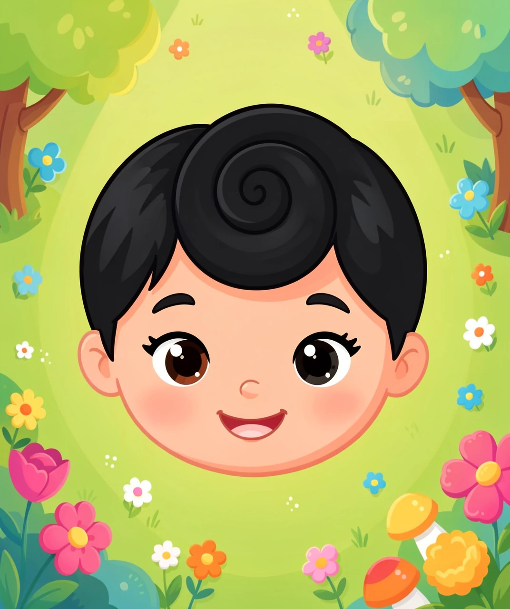
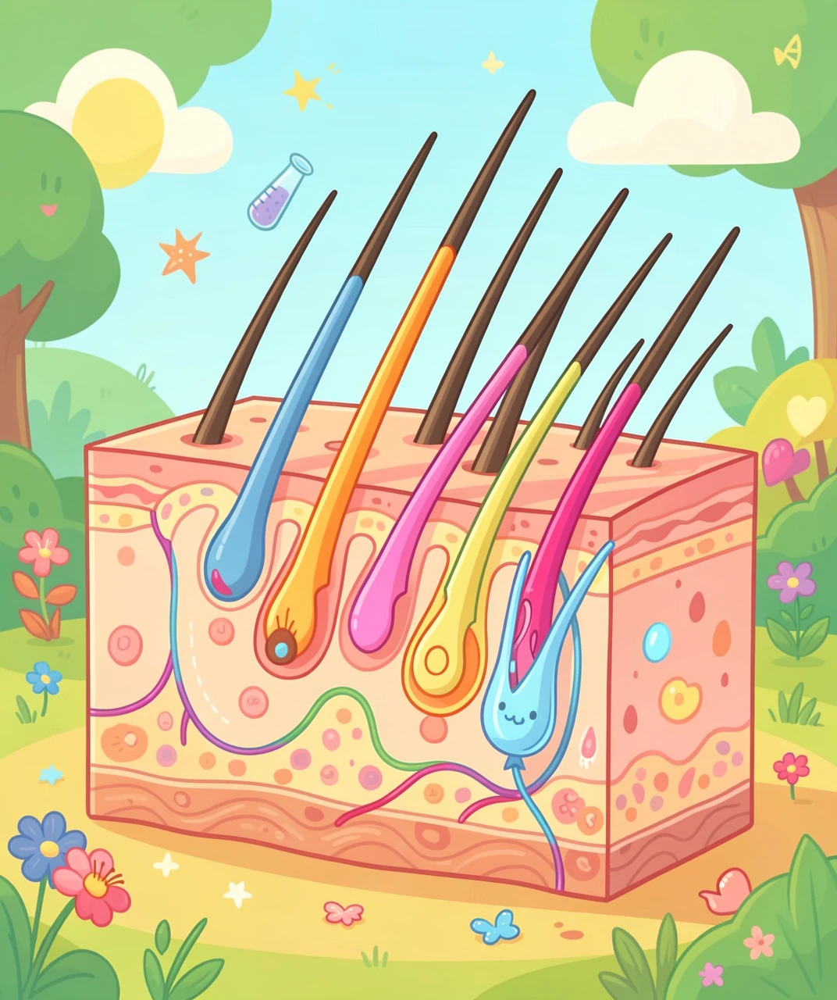
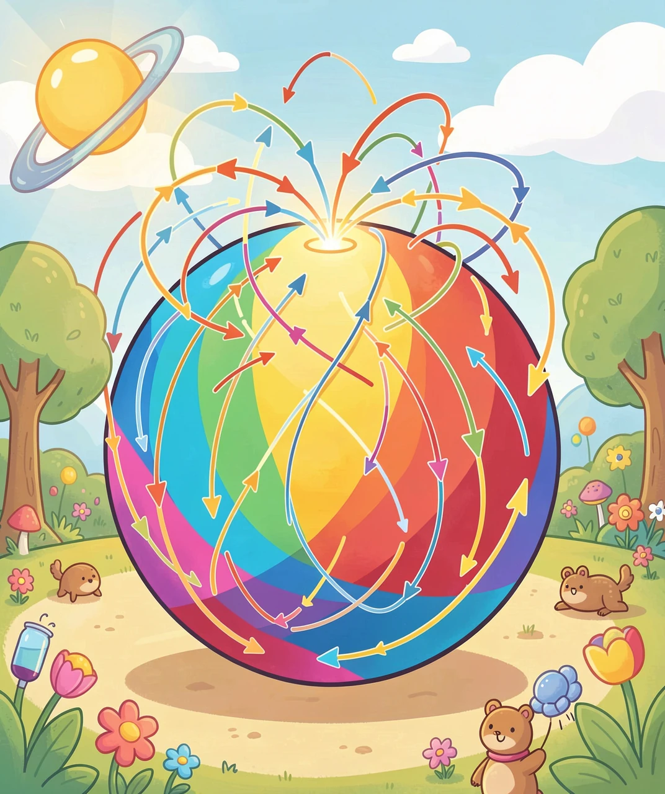
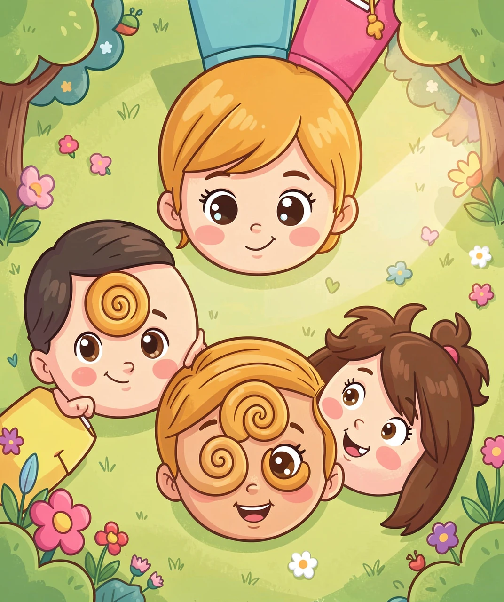
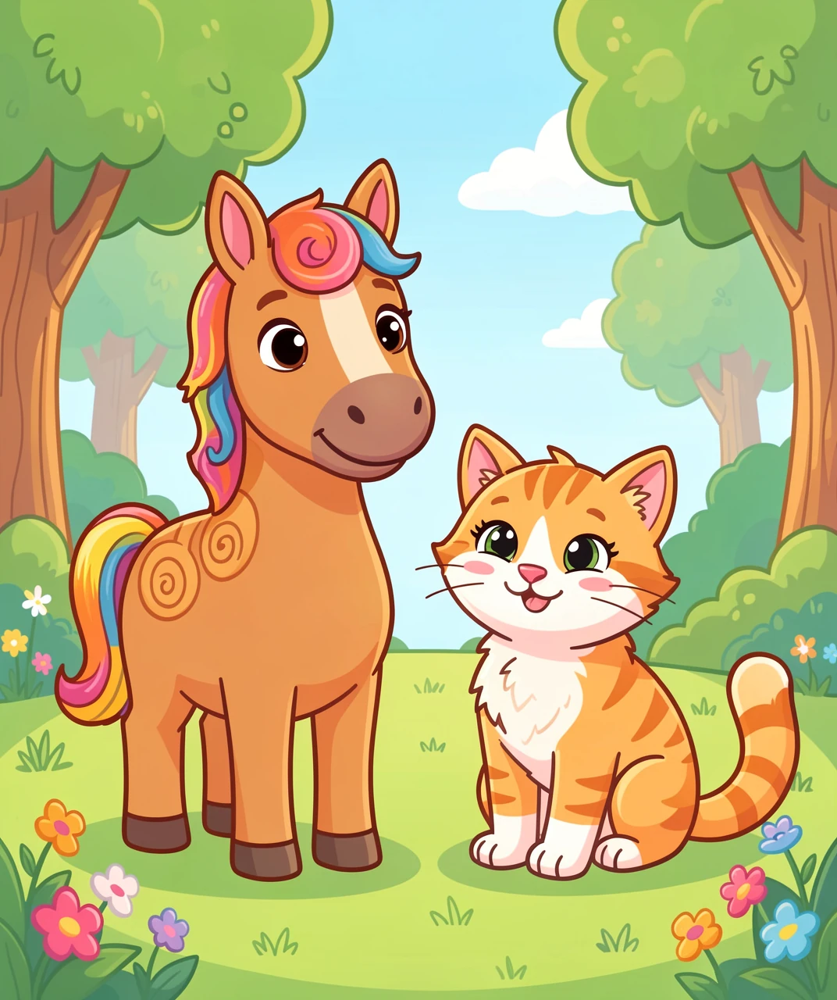

为什么头发会打着一个转儿长？
下次排队做操的时候，偷偷看看前面同学的后脑勺。你会发现一件很奇怪的事：头发并不是乱长的，它们像被一只看不见的手梳过一样，绕着一个中心点转圈——从那个点出发，一圈一圈向外散开，形成一个小小的漩涡。这个东西叫发旋，也有人叫它「旋儿」「发涡」。
再仔细看，还能发现更多花样：有的人只有一个旋，有的人有两个；有的人的旋是顺时针转的，有的人是逆时针；还有人的旋不在正中间，而是偏在一边，甚至长在额头上（那撮怎么也压不下去的翘毛，就是它跑错了地方）。
奇怪的问题来了：头发又没长眼睛，也没人天天给它们排队，它们凭什么知道要转圈？为什么不能像草坪上的草一样，整整齐齐地朝同一个方向倒呢？今天我们就把这个问题一层层剥开。

要弄懂发旋，先得纠正一个直觉：我们常以为头发是从头皮里垂直冒出来的，像插在蛋糕上的蜡烛。其实不是。把头皮放到显微镜下看，你会发现每一个毛囊——也就是头发的「根」埋在皮肤里的那间小房子——都是斜着插进去的，跟皮肤表面大约成一个锐角。
毛囊朝哪边斜，长出来的头发就朝哪边倒。这就像一片草地：如果所有草都朝东边歪，你从上面看下去，就能看到一层整齐的「毛流」。人的头皮也一样，一大片毛囊的倾斜方向基本一致，于是头发整体朝一个方向倒，这就是我们说的发流。
那么再问一层：毛囊为什么会斜？因为皮肤不是一块静止的布，它一直在被拉扯。胎儿在妈妈肚子里的时候，脑袋像一个被迅速吹大的气球，头皮面积飞快变大，皮肤被向各个方向拉紧。毛囊是在这片被拉伸的皮肤里「种」下去的，它们会顺着皮肤受力的方向排列——就像你把一把牙签撒在被拉紧的橡皮膜上，牙签会被拉扯的方向理顺。所以发流的方向，本质上是胚胎期头皮生长时留下的「张力地图」。

现在到了最关键的一层。就算所有毛囊都朝同一个方向，整片头发也应该像梳理过的刘海一样朝一边倒啊，为什么中间非得出现一个转圈的点呢？
答案是：因为你的头顶是一个球，不是一个平面。数学家早就证明了一件非常反直觉的事，叫做「毛球定理」（Hairy Ball Theorem）：你没办法把一个球上的毛全部梳平——只要你想让每根毛都平贴在球面上，球上至少会出现一个「梳不平」的点，那里的毛必然打转或者翘起来。
为什么？可以这么想：给你一个球，球面上每一个点都放一支小箭头，要求箭头方向连续变化、不能突然翻转。你从赤道开始把箭头全部朝北画，走到北极点的时候，所有方向都汇聚到一起，箭头该指哪？指哪都不对——因为「北」这个方向在极点本身消失了。这个无法定义方向的点，就成了漩涡的中心。所以发旋不是头发「商量好」要转圈，而是球面几何逼出来的必然结果。
这就是为什么：你的手臂、腿上的汗毛可以整整齐齐（因为那些地方更接近平面或圆柱），而头顶这个最接近球面的地方，几乎人人都有一个旋。这是拓扑学——数学里专门研究「形状在拉伸变形中不变的性质」的分支——送给我们每个人的一份小礼物。

毛球定理只保证「至少有一个旋」，没说一定只有一个。为什么有人头顶上会冒出两个甚至三个旋？这要从胚胎发育的过程说起。
大约在妈妈怀孕的第 10 到 16 周，胎儿头皮上的毛囊开始一批一批地形成。这不是一个从上到下的整齐施工，而是像几支施工队同时在不同区域开工，每个区域按照当时当地皮肤被拉扯的方向排列毛囊。如果相邻两片区域的张力方向差得比较多，拼接处就会挤出一个额外的旋——于是就有了双旋。
那方向呢？为什么有的顺时针有的逆时针？这里有一半是基因给的，还有一半是发育中的偶然。研究发现，发旋方向在家族里有一定相关性，科学家也找到了一些跟它有关的基因（这些基因同时还参与身体左右不对称的发育，比如心脏长在左边）。但同一对父母生的孩子、甚至同卵双胞胎，发旋方向也可能相反——说明在胚胎那几周里，分子层面的微小随机波动会决定最终的旋转方向，这不是基因能完全写死的。

既然发旋是被「球面上的毛流」逼出来的，那么所有长毛的、身体带曲面的动物，都该有旋——事实正是如此。马的脖子和额头上常常能看到明显的毛旋，养马的人很早就注意到它们；牛额头上的旋、狗和猫身上某些位置毛流突然转向的地方，也都是同一个道理。英文里把那撮顽固翘起的头发叫 cowlick（「牛舔过的地方」），想象一头牛舔了你一下，把那块毛舔得朝上翘——名字就是从这儿来的。
再往大里看，同一套「绕着一个点旋转」的形状，在自然界到处都是：水池放水时的漩涡、天空中台风的风眼、银河系的旋臂。它们形成的具体原因各不相同（水涡是重力和角动量，台风是科里奥利力），但背后都在回答同一个问题：当一整片东西都想朝某个方向流动，却又被约束在一个曲面上时，多余的方向去哪儿了？答案是：它们挤成一个旋转的中心。
所以下次你摸到自己头顶那个小旋的时候，可以这样讲给别人听：它不是理发师留下的，也不是什么命运纹路——它是毛球定理写在你头上的一道数学题，是头皮被拉扯时留下的力学记录，也是你还在妈妈肚子里那几周里，一场微小而偶然的生命施工。

（答案：1-B 2-C 3-B 4-C 5-B）